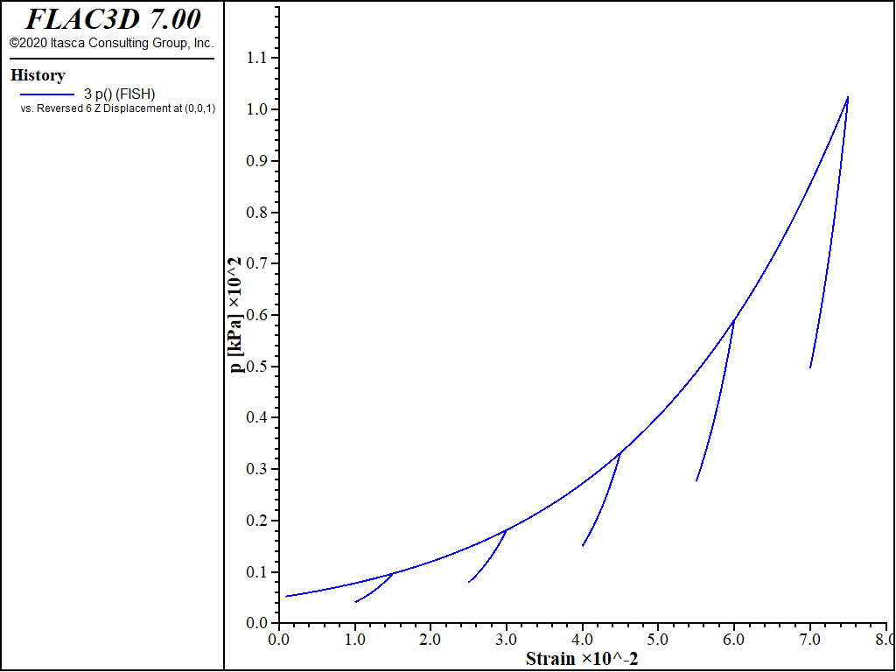
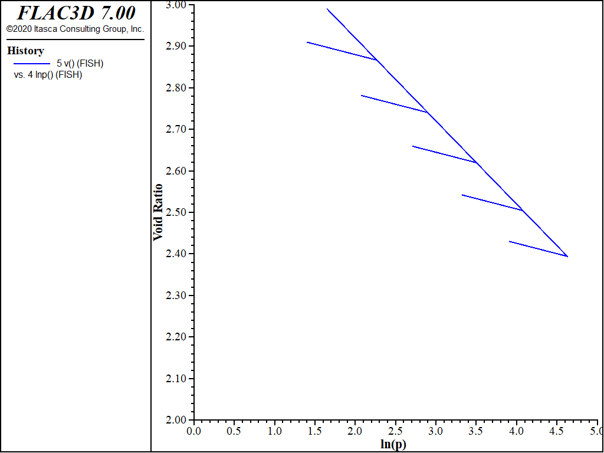
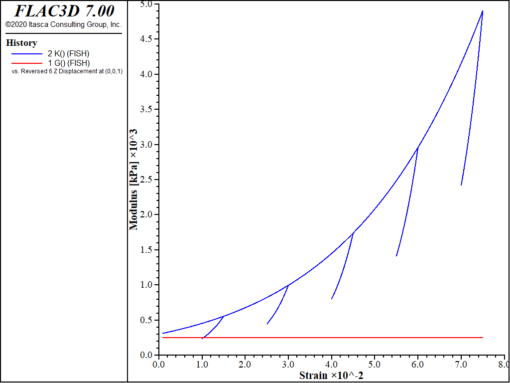

采用修正 Cam-Clay 模型的各向同性固结试验
注意
本示例的项目文件可在 FLAC3D 中查看/运行。[1] 该项目的主数据文件见本示例末尾（main data file）。
这个简单的单网格单元示例针对正常固结材料检验了 修正 Cam-Clay 模型（modified Cam-Clay model），在各向同性压缩试验中施加若干次加载-卸载循环。 下一句无实际意义。 初始应力为各向同性应力，因此 \(\sigma_{xx}\) = \(\sigma_{yy}\) = \(\sigma_{zz}\) = -5 kPa。材料特性包括：
| 最大剪切模量（\(G_{max}\)） | 10 MPa |
| 剪切模量（\(G\)） | 250 kPa |
| 临界状态比（\(M\)） | 1.02 |
| 正常固结线斜率（\(\lambda\)） | 0.2 |
| 弹性膨胀线斜率（\(\kappa\)） | 0.05 |
| 参考压力（\(p_1\)） | 1 kPa |
| 参考比容（\(v_{\lambda}\)） | 3.32 |
| 固结压力（\(p_{c0}\)） | -5 kPa |
假定试样发生正常的各向同性固结，\(OCR\) = 1， 因此初始平均有效压力和先期固结压力相同。 它们的值使用一个简单的 FISH 函数指定：
fish define camclay_ini_p
loop foreach local p_z zone.list
local mean_p = -(zone.stress.xx(p_z) + zone.stress.yy(p_z) ...
+ zone.stress.zz(p_z))/3.0 - z.pp(p_z)
zone.prop(p_z,'pressure-effective') = mean_p
zone.prop(p_z,'pressure-preconsolidation') = mean_p
endloop
end
结果显示于 图 1（Figure 1）、 2 和 3。图 1（Figure 1） 绘制了平均有效压力历史。 图 2（Figure 2） 绘制了 \(v\) 与 \(\ln p\) 的关系，其中显示了 正常固结线和弹性膨胀线。本示例中剪切模量 被明确指定为输入参数，因此假定其为常数，而体积模量 随平均有效压力变化。体积模量和剪切模量的历史绘于 图 3（Figure 3）。


图 1：压力与位移的关系。


图 2：比容与 \(\ln p\) 的关系。


图 3：体积模量和剪切模量与位移的关系。
数据文件
IsotropicConsolidationModifiedCamClay.dat
;------------------------------------------------------------
; 修正剑桥黏土试样的各向同性压缩试验（排水）
;------------------------------------------------------------
model new
model large-strain off
fish automatic-create off
model title "Isotropic compression test for normally consolidated soil"
zone create brick size 1 1 1
zone cmodel assign modified-cam-clay
; --- 边界条件和初始条件 ---
zone gridpoint fix velocity
zone initialize stress xx -5. yy -5. zz -5.
; --- 模型属性 ---
zone property shear 250. bulk-maximum 10000.
zone property ratio-critical-state 1.02 lambda 0.2 kappa 0.05
zone property pressure-reference 1. specific-volume-reference 3.32
;
program call 'fishfunctions'
[camclay_ini_p]
; --- 历史 ---
history interval 20
fish history G
fish history K
fish history p
fish history lnp
fish history v
zone history displacement-z position 0 0 1
; --- 试验 ---
[loadingunloading]
model save 'camiso'
尾注
| [1] | 要在 FLAC3D 中查看该项目，请使用程序菜单。
⮡ FLAC |
⇐ Isotropic Consolidation Test with Double-Yield Model | Triaxial Compression Test with Hoek-Brown Model ⇒
| 这些内容对您有帮助吗？… 版权与免责声明 | FLAC3D © 2019, Itasca | 原文更新于 2020 年 10 月 8 日 |